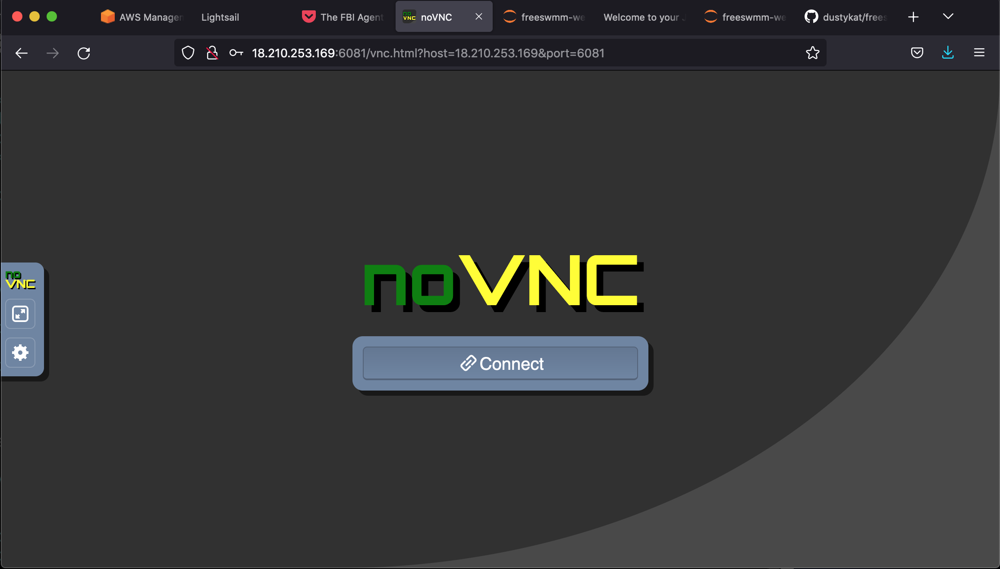
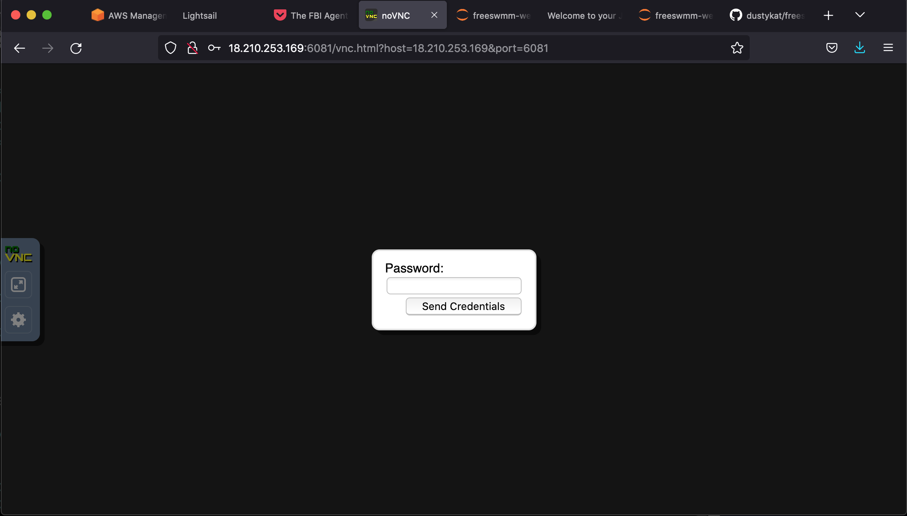

2 EPANET Intro/Examples¶
what is epanet?
Purpose¶
what is it for?
versions
GUI Access¶
EPANET as supplied by URL also includes a graphical user interface (GUI) that will allow one to quickly build network simulation models, run them, and present results. The GUI runs on Windows machines using Intel/AMD hardware. It can be made to run on other operating systems and architectures, but not easily.
EPANET On-Line Access¶
An on-line version is hosted at http://freeswmm.ddns.net described herein uses the WINE application layer to run an implementation of EPANET with the “Classic” GUI on a Linux server, on an Intel x86-64 chipset.
Access to the online desktop is as simple as
Accessing the FreeSWMM host¶
To access the FreeSWMM site use the link: FreeSWMM (via NoVNC) you will encounter the NoVNC interface pictured below:
Note
Alternate entry using the assigned public IP:
User
VNC Services (Run as root or sudo)
sudo snap set novnc services.n6081.listen=6081 services.n6081.vnc=localhost:5901
sudo snap set novnc services.n6082.listen=6082 services.n6082.vnc=localhost:5902

When you when you click on “Connect” you will encounter a simple password challenge as pictured below:
Note
You may get a red warning bar across the top telling you the access is unsecure, but it will still work, just ignore the warning and proceede as shown below. The warning arises because the the server uses a self-signed certificate instead of certificate from a recoginized certificating authority and most corporate networks will not allow TLS handshake to complete (so end user cannot really access anything).
In most cases you will also observe a security warning that obscures the password dialog, simply click on some part of the dialog to background the warning and proceede.

Send the Password
Enter the password freeswmm and select “SEND CREDENTIALS”
Upon sucessful connection you will be attached to an XFCE desktop on the remote server as pictured below:

To start SWMM navigate to the WINE application and select SWMM 5.1.015 to launch the interface, as pictured below:

When SWMM starts you should be presented with a clean interface as pictured below:

Note
EPANET is running in the WINE application layer on a linux server, it is similar to windows in terms of file management, resizing and moving the window showing EPANET is accomplished by right-click in the application tab in the upper part of the web interface; otherwise it is ordinary EPANET as one would experience on a Windows computer
Warning
The remote server is programmed to disconnect every 1 hour as a way to end abandoned or run-away processes. Anything saved is preserved, but unsaved work is lost. Keep an eye on the clock in the upper right corner of the desktop after connection to be aware of pending disconnect. There is NO WARNING.